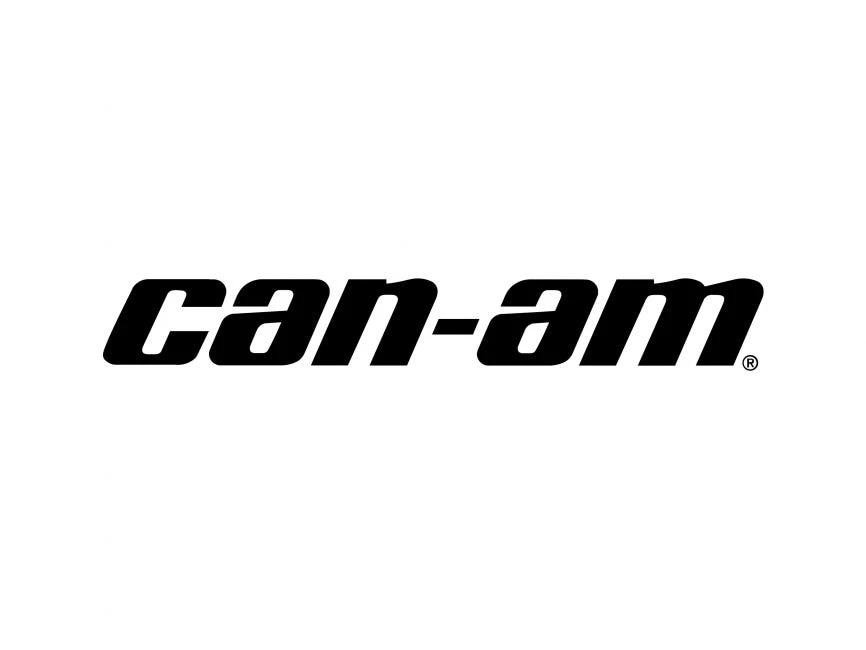
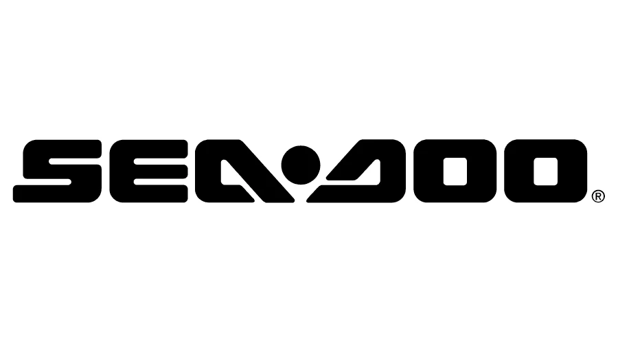

Poczuj adrenalinę
na wodzie i na lądzie
Skutery wodne, quady, pojazdy SSV i trójkołowce dla tych, którzy nie zwalniają. Sprawdzony sprzęt, pełne wsparcie i doradztwo na każdym etapie zakupu.


Wybierz swoją kategorię
UTV / SSV
Maverick, Maverick R, Traxter i inne pojazdy SSV Can-Am.
Sea-Doo
Spark, GTI, GTX, RXP, RXT i inne modele skuterów wodnych.
On Road
Spyder F3, Spyder RT, Canyon, Ryker — trójkołowce Can-Am.
ATV
Outlander, Outlander MAX, Renegade i inne quady Can-Am.
Elektryczne
Can-Am Origin, Pulse oraz Outlander Electric — pełna moc bez emisji.
Wyróżnione modele
RXP-X Senna 350
Limitowana edycja we współpracy z marką Senna — najmocniejszy silnik w historii Sea-Doo, 350 KM.
Ryker Special Series
Limitowana, jednoroczna edycja Rykera — felgi Liquid Titanium, wydech Akrapovič i zawieszenie klasy premium.
Outlander X MR MAX
Błotny specjalista Can-Am na wydłużonym podwoziu MAX — wyciągarka 3500 lb i opony XPS Swamp King XL 30".
Oficjalna dystrybucja Sea-Doo i Can-Am z pełną gwarancją producenta.
Profesjonalny serwis posprzedażowy i dostęp do oryginalnych części BRP.
Pomożemy dobrać pojazd idealnie dopasowany do Twojego stylu jazdy.